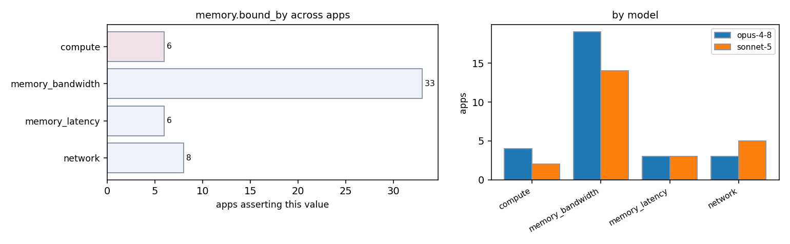

| app / variant | opus-4-8 | sonnet-5 | evidence |
|---|---|---|---|
| AMG2023:cpu | — | memory_bandwidth | README.md:5-12 (algebraic multigrid solver for sparse unstructured-grid linear systems: sparse matvec/relaxation kernels) |
| AMG2023:cuda | memory_bandwidth | memory_bandwidth | amg.c:452 (sparse SpMV on device, cusparse) very low flops/byte README.md:5 (algebraic multigrid sparse solver) amg.c:386-419 (Umpire device/UM memory pools sized via -dev_pool_size/-um_pool_size, GPU memory pool management) |
| AMG2023:mpi | memory_bandwidth | — | amg.c:452-456 (sparse matvec on Laplacian stencil = few flops per byte) README.md:5 (algebraic multigrid solver for sparse unstructured systems) |
| AMG:threaded-mpi | memory_bandwidth | memory_bandwidth | docs/amg.README:83-85 (AMG is memory-access bound, doing only about 1-2 computations per memory access) docs/amg.README:158 (This code is memory-access bound) docs/amg.README:83-85 (memory-access bound, doing only about 1-2 computations per memory access) |
| Kripke:cpu | — | memory_bandwidth | src/Kripke/Arch/SweepSubdomains.h:20-55 (nested loops over direction/group/zone doing simple diamond-difference updates per zone, streaming access) README.md:4-10 (data-layout of angular flux (D,G,Z) is central performance factor, implying memory-access-pattern sensitivity) |
| Kripke:kripke.exe:cuda | — | memory_bandwidth | src/Kripke/Arch/SweepSubdomains.h:20-55 (streaming per-zone diamond-difference updates, low flop-to-byte ratio, well suited to GPU but bandwidth-limited) |
| Kripke:kripke.exe:rocm | — | memory_bandwidth | src/Kripke/Arch/SweepSubdomains.h:20-55 (streaming per-zone diamond-difference updates, low flop-to-byte ratio) |
| Kripke:kripke:cuda | memory_bandwidth | — | src/Kripke/Kernel/LTimes.cpp:62 (streaming FMA kernels offloaded) README.md:22 (memory-system efficiency the central concern) |
| Kripke:kripke:rocm | memory_bandwidth | — | src/Kripke/Kernel/LTimes.cpp:62 (streaming FMA offloaded) README.md:22 (memory-system efficiency central) |
| Kripke:mpi | memory_bandwidth | — | src/Kripke/Kernel/LTimes.cpp:62 (phi += ell*psi, one FMA per element streamed) README.md:4 (research how data layout and architectures affect Sn performance) README.md:22 (efficient use of memory systems is the central concern) |
| Kripke:threaded | memory_bandwidth | — | src/Kripke/Kernel/LTimes.cpp:62 (streaming FMA over threads) README.md:22 (memory-system/SIMD efficiency central) |
| Quicksilver:cuda | memory_latency | memory_latency | README.md:13 (Unified memory is assumed) src/initMC.cc:56-58 (gpuMallocManaged under HAVE_UVM) src/MonteCarlo.cc:28-34 (gpuMallocManaged) |
| Quicksilver:rocm | memory_latency | memory_latency | README.md:13 (Unified memory is assumed) src/MonteCarlo.cc:28-34 (gpuMallocManaged) src/initMC.cc:56-61 (HAVE_UVM -> gpuMallocManaged, same portability macro used for HIP) |
| Quicksilver:threaded-mpi | memory_latency | — | README.md:15-16 (Performance is likely to be dominated by latency bound table look-ups) README.md:10 (replicate memory access patterns of Mercury) |
| Quicksilver:threaded-mpi-cpu | — | memory_latency | README.md:15-17 ("Performance of Quicksilver is likely to be dominated by latency bound table look-ups, a highly branchy/divergent code path, and poor vectorization potential.") |
| STREAM:mpi | — | memory_bandwidth | README:34-36 ("MPI is not a preferred implementation for STREAM, which is intended to measure memory bandwidth in shared-memory systems") |
| STREAM:stream_c.exe:threaded | memory_bandwidth | memory_bandwidth | README:3-4 (de facto standard for measuring sustained memory bandwidth) stream.c:42-43 README:3-4 ("STREAM is the de facto industry standard benchmark for measuring sustained memory bandwidth") |
| STREAM:stream_f.exe:threaded | memory_bandwidth | — | stream.f:42-43 (exploit the main memory bandwidth of the system) README:3-4 |
| hpl:mpi | — | compute | TUNING:310-334 ('good block sizes ... From a computation point of view a too small value of NB may limit the computational performance ... because almost no data reuse will occur in the highest level of the memory hierarchy') -- indicates code is tuned for cache reuse via blocking, i.e. compute-bound with BLAS3 dgemm dominating |
| hpl:mpi-cpu | compute | — | acinclude.m4:13-43 (links optimized BLAS dgemm) man/man3/HPL_dgemm.3 (Schur update dominated by DGEMM) |
| hypre:cuda | memory_bandwidth | — | src/parcsr_mv/par_csr_matvec_device.c:18 (sparse SpMV on device via cuSPARSE, ~1-2 flops/nonzero, bandwidth bound) |
| hypre:mpi | memory_bandwidth | — | src/docs/usr-manual/... AMG uses sparse matvec; sparse matvec is memory-bandwidth bound with ~1-2 flops per nonzero (par_csr_pmvcomm.c matvec) |
| hypre:mpi-cpu-boomeramg | — | memory_bandwidth | src/parcsr_ls/par_relax.c (relaxation kernels are sparse matrix row-wise operations, e.g. Gauss-Seidel/Jacobi sweeps over CSR rows) src/multivector/par_csr_pmvcomm.c:65-97 (SpMV requires halo of off-process x entries) |
| hypre:mpi-cuda-boomeramg | — | memory_bandwidth | src/parcsr_ls/par_relax_device.c:18-50 (relaxation/matvec kernels are sparse, memory-bandwidth dominated even on GPU, consistent with CPU path) |
| lammps:cuda-kokkos | compute | — | src/KOKKOS/pair_reaxff_kokkos.cpp:19-25 (GPU kernels optimized to reduce math/exponentials and thread divergence => compute-bound many-body kernels) |
| lammps:gpu-kokkos-reaxff | — | compute | src/KOKKOS/pair_reaxff_kokkos.cpp:56-89 (heavy use of Kokkos DualView/parallel_for kernels operating on dense per-atom arrays -> GPU compute-bound many-body kernels) |
| lammps:mpi | compute | — | src/REAXFF/pair_reaxff.cpp:501-514 (bond, over/under-coord, lone-pair, angle, penalty, torsion, hbond, vdW, coulomb energy terms all computed = many-body bond-order potential) src/REAXFF/reaxff_torsion_angles.cpp src/REAXFF/reaxff_valence_angles.cpp |
| lammps:reaxff | — | memory_bandwidth | doc/src/pair_reaxff.rst:175-198 (heuristic dense memory management, sparse bond/H-matrix workloads typical of PuReMD-derived code) |
| lammps:threaded | compute | — | src/OPENMP/reaxff_forces_omp.cpp:139-141 (many-body force compute distributed across threads) |
| miniFE:cuda | memory_bandwidth | — | cuda/src/CudaELLMatrix.hpp:150 (ELL sparse matvec on GPU, streaming, bandwidth-bound) README.FIRST:81-84 (CG MFLOP/s FOM) |
| miniFE:miniFE.x:mpi | memory_bandwidth | — | ref/src/cg_solve.hpp:124-129 (sparse matvec + axpy + dot, sparse iterative solver) README.FIRST:81-84 (FOM is MFLOP/s for CG solve) |
| miniFE:miniFE.x:threaded-mpi | memory_bandwidth | — | openmp/src/Vector_functions.hpp (omp parallel for over CSR sparse matvec/axpy, streaming) README.FIRST:81-84 (CG MFLOP/s FOM) |
| miniFE:miniFE:mpi | — | memory_bandwidth | README.md:3-9 ("unstructured implicit finite element codes"); ref/src/SparseMatrix_functions.hpp sparse matvec structure |
| miniFE:miniFE:threaded-mpi | — | memory_bandwidth | openmp-opt-knl/src/exchange_externals.hpp (same halo pattern), openmp-opt-knl/src/SparseMatrix_functions.hpp (CSR sparse matvec kernel, low reuse) |
| miniFE:mpi-cuda | — | memory_bandwidth | cuda/src/SparseMatrix_functions.hpp:488-490 (device memory bandwidth bound ELL matvec kernel is the dominant per-iteration cost) |
| mixbench:cuda | memory_bandwidth | — | README.md:2 (evaluate performance bounds ... mixed operational intensity) mixbench-cuda/mix_kernels_cuda.cu:54-60 (load element then variable compute_iterations of FMA) |
| mixbench:opencl | memory_bandwidth | — | README.md:2 (performance bounds, mixed operational intensity) |
| mixbench:rocm | memory_bandwidth | — | README.md:2 (performance bounds, mixed operational intensity) |
| mixbench:sycl | memory_bandwidth | — | README.md:2 (performance bounds, mixed operational intensity) |
| mixbench:threaded | memory_bandwidth | — | README.md:2 (performance bounds, mixed operational intensity) mixbench-cpu/mix_kernels_cpu.cpp:47-60 (SIMD load then variable FMA count) |
| osu-micro-benchmarks:cpu | — | network | c/mpi/collective/blocking/osu_allreduce.c:164-166 (all runtime spent in MPI_Allreduce call, no local compute) |
| osu-micro-benchmarks:mpi-cpu | — | network | c/mpi/pt2pt/standard/osu_bw.c:236-247 (only communication, no floating point compute on data) |
| osu-micro-benchmarks:mpi-cuda | — | network | README.md:1046-1050 (GPU buffer bandwidth test intent is to measure the PCIe/NVLink/network path to/from the GPU, so performance is bound by that link, not device compute) |
| osu-micro-benchmarks:osu_allreduce:cuda | — | network | c/mpi/collective/blocking/osu_allreduce.c:164-166 (single MPI_Allreduce call per iteration, all time in communication/PCIe+network transfer, no GPU compute kernel) |
| osu-micro-benchmarks:osu_allreduce:mpi | network | — | c/mpi/collective/blocking/osu_allreduce.c:164-165 (network collective is what is measured, not local FLOPs) c/mpi/collective/blocking/osu_allreduce.c:27-28 |
| osu-micro-benchmarks:osu_bw:mpi | network | — | README.md:178-179 (bandwidth of the network is what is measured; performance bound by network) |
| osu-micro-benchmarks:osu_latency:mpi | network | network | c/mpi/pt2pt/standard/osu_latency.c:186-272 (no arithmetic, pure message round-trip) c/mpi/pt2pt/standard/osu_latency.c:177-273 (single message buffer touched per iteration, no reuse of large working set) |